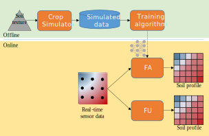
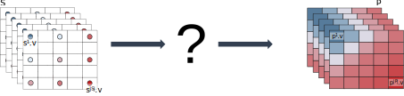
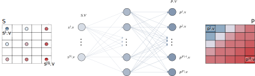
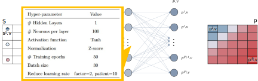

Soil Moisture Modeling and Assessment
A Case Study
Matteo Francia
DISI — University of Bologna
m.francia@unibo.it
Hi!
Matteo Francia
- Assistant professor at DISI - University of Bologna
- Contact: m.francia@unibo.it
Main background:
- Ph.D. in Computer Science and Engineering
- Big data and machine learning
- … with applications to the field of Precision Agriculture
- Interdisciplanarity is very important!
These slides are the result of a shared effort, many thanks to:
- Prof. Matteo Golfarelli, Dott. Manuele Pasini, Dott. Alex Baiardi
Patent:
- “METODO E SISTEMA PER IL MONITORAGGIO DELL’UMIDITÀ DEL SUOLO” registered on October 18, 2023 N. 102021000023162
Smart Irrigation
The synergy of internet of things (IoT) and precision farming is producing valuable applications in the Agritech domain [@vitali2021crop]
- Agritech: use of technology for farming to improve efficiency & profitability
Optimizing soil moisture is crucial for watering and crop performance [@turkeltaub2016real]
GOAL
- Saving water while improving fruit quality (i.e., provide a recommendation of the amount necessary water)
Problems:
- Soils have different water retention
- Watering systems have different behaviors
- Plants have different water demand
- Kiwi [@judd1986water] vs Grapes
- Sensors produce different measurements with different precisions
Reference Scenario
Our approach focuses on (Kiwi) orchards
- Kiwi plants are aligned along rows
- Each row has many drippers (e.g., 1 every 60cm)
- Drippers can water a limited soil volume
Overview of the Approach
Our approach is composed of two phases
- Monitoring: understand the soil behavior
- Prescripting: provide the optimal amount of water
… involves two actors
- Farmer: provides knowledge about the field and daily feedbacks
- Technician: defines the optimal status and checks the system’s behavior
… and requires an IoT environment
- Sensors (mandatory): provide real-time knowledge
- Actionable water pump: enables the smart irrigation
- Without a remote connection, we provide the farmer a recommendation about the irrigation (e.g., via e-mail)
Monitoring

Model of the orchard
Sensor Layouts and Symmetry Assumptions
Competitors rely on a single sensor (or a line of sensors at different depths) and assume that the soil moisture is uniform everywhere
- If the watered volume is symmetric along the row, a 2D sensor grid is sufficient to represent the soil volume
- If moisture variations take place along the row too, a 3D grid of sensors is required
- E.g., too sparse drippers
Overview
Overview
- Online: compute soil profiles as soon as new data arrives
- Offline: refine the profiling function through machine learning
Data Collection
Setup
- We install a 2D/3D grid of sensors
For instance, in the 2D setting
- 4 columns of sensors are located across the row (e.g., 0/30/60/90cm)
- The column (0, *) is under the dripper
- Each column has 3 sensors located at 3 depths (e.g., 20/40/60cm)
Dataset
- In two years, we collected 16GB of data (as of 2022-08-30)
- In four years, we collected 64GB of data (as of 2024-08-30)
Processing
Feature unaware (FU)
- Linear interpolation of the real-time sensor data
- Plug-and-play (working since day 0)
Feature aware (FA)
- Interpolation of the real-time sensor data through machine learning
- Requires time for data collection and training/testing
Online Phase: Feature-Unaware Profiling
Profile real-time sensor data through statistical techniques
- Linear interpolation of the real-time sensor data
- Plug-and-play (working since day 0)

Feature Unaware Profiling
Offline Phase: Feature-Aware Profiling
Profile real-time sensor data through a machine learning model
- Interpolation of the real-time sensor data through machine learning
- Requires time for data collection and training/testing
In the offline pipeline, we train the model given the soil texture as input…
- Simulate different patterns of SM to produce a dataset of simulated SM
- Train a machine learning model on such data
- Deploy the model to estimate the soil profile
Feature Aware: Crop Simulator
Data generation and augmentation
- CRITERIA 3D [@bittelli2011criteria] to simulate the hydrological fluxes in the soil following Richard’s equations
- Inputs
- The soil texture
- “Default” settings for the kiwi-plant (e.g., the shape of the tree roots / LAI)
- Watering system based on a single dripper
- Weather conditions from ARPAE
- Different watering patterns (by changing watering intervals and the amount of supplied water)
- Output
- Training set = \(12 \frac{𝑠𝑎𝑚𝑝𝑙𝑒𝑠}{ℎ𝑜𝑢𝑟} \cdot 24 \frac{ℎ𝑜𝑢𝑟}{𝑑𝑎𝑦} \cdot 30 \frac{𝑑𝑎𝑦}{𝑚𝑜𝑛𝑡ℎ} \cdot 4 months = 35 \cdot 10^3 samples\)
- Validation set = same as training set, but we simulate with different weather/irrigation patterns
- Test set = 4 months from the real field
- Different weather conditions & watering patterns to enable generalization and avoid overfitting
Feature Aware: Machine Learning
This is a (multi-output) regression problem
- The task is to learn the function mapping the input to the continuous output
- We tried several machine learning models
- SVR, Random Forest Regression, Linear Regression, and ANN
- (A simple) ANN is the best performing model
Artificial Neural Networks
The hyperparameters (structure/learning rates) are set through a hyper-parameter tuning process
- HyperOpt [@komer2019hyperopt]: optimization technique to explore the huge search space of hyper-parameters
- We are nesting machine learning into machine learning!
Artificial Neural Networks
ANN and Hyper-parameters
Evaluation
Feature-unaware and feature-aware profiling are complementary
- Feature-unaware profiling allows the system to operate as soon as we have the sensors ready
- It requires more sensors to be accurate since it assume that soil-moisture behaves linearly in the soil
- However, we cannot have too many sensors due to their economic costs or space constraints
- Feature-aware profiling is more precise and can operate with any layout of sensors
- However, it requires weeks of data to tune the simulator
Prescripting

Model of the orchard
Prescripting
The technician sets an optimal soil moisture and the system must reach it
- Red: optimal state
- Blue: current state

Watering Advice (2021-2024) [@quartieri2021effect]
Given the following algorithm
IF
((#BlueCells + #LightBlueCells)/(#Cells) < 0.50 &&
(#BlueCells)/(#Cells) < 0.25 in the last 12h) &&
precipitations < 7mm in the last 12h
THEN
Recommended water = Evapotranspiration (ET) of the day before
ELSE
Do nothing
We provide advice (recommendations) to technicians, who use (and adjust) the advice according to their experience.
- Pro: it relies on the experience of the technician
- Con:
- can be stuck in sub-optimal irrigations (e.g., the system slowly converges to the optimal scenario) and requires human intervention
- does not scale out to many fields; controlling 6 fields already entails a lot of work
Test Setup
Two irrigation setups during the 2021-2024 campaigns (i.e., May/October) within the same orchard
- Control Row (T0): irrigation is manually controlled by the farmer
- Managed Row (T1 and T2): irrigation is automatically controlled using a 2D installation of 12 sensors
T0 (single wing)

T1 (single wing)
T2 (double wing)

Water consumption

T0 vs T1
Results
Uncountable: crop sustainability & smaller environmental footprint
Money:
- Smaller irrigation amount & energy costs
- MR saved 44% of water during the whole campaign
- Max. saving in Jun and Sep: harder to estimate water demand
|
|
|
Irrigation volume (\(\frac{m^3}{ha}\))
|
Performance
|
|
|
Row
|
T0
|
T1
|
T2
|
T1
|
T2
|
|
Field
|
Year
|
|
|
|
|
|
|
C1
|
2021
|
3790
|
2112
|
3382
|
-44%
|
-11%
|
|
2022
|
3059
|
2300
|
3420
|
-25%
|
+12%
|
|
2023
|
3595
|
2256
|
4453
|
-37%
|
+24%
|
- Monitoring also help us in understanding the dynamics of the fields (e.g., due to convexing of the field)
| Surface (\(ha\)) |
5 |
5 |
| Pump consumption (KWh) |
10 |
10 |
| Cost KWh |
0.5€ |
0.5€ |
| Irrigation volume (\(\frac{m^3}{ha}\)) |
3790 |
2112 |
| #Drippers 4\(\frac{l}{h}\) (per \(ha\)) |
3344 |
3344 |
| Water consumption (\(\frac{m^3}{h}\)) |
14 |
14 |
| Pump working hours (\(\frac{h}{ha}\)) |
274 |
157 |
| Energy costs |
6850€ |
3925€ |
Results
Uncountable: crop sustainability & smaller environmental footprint
Money:
- The main impact is on economic values of Kiwi fruits
- Fruit quality results are discussed in [@quartieri2021effect] and [@baldi2023smart]
- Comparable (or even better) quality of the product; e.g. in 2021:
- Productivity unaffected by irrigation (32-39 kg/vine; 35-44 t/ha)
- CR’s fruits appeared greener (Hangle 105) than MR (Hangle 102)
- CR’s fruits solid concentration (12.7 brix) < MR’s fruits (15.3 brix)
- Gap maintained after 2 months of storage (and 1 day of shelf)
| Class |
1 |
2 |
3 |
4 |
5 |
|
|
| %Dry mass |
16.5 |
17.5 |
18.5 |
19.5 |
22 |
TGZ |
€/kg |
| T0 |
0 |
0.09 |
0.15 |
0.21 |
0.0 |
0.45 |
0.27 |
| T1 |
0 |
0.01 |
0.21 |
0.52 |
0.15 |
0.88 |
0.53 |
Future direction: forecasting
Remote observations
- How can we integrate in-situ soil profiles with satellite observations?
Forecasting
- While profiling looks at the current state of soil moisture, how will soil moisture change — for instance — in a week?
- Soil profiles are snapshots of soil moisture, we should learn from a time series of snapshots
- Features to consider
- Soil conditions
- Weather conditions
- Type of irrigation